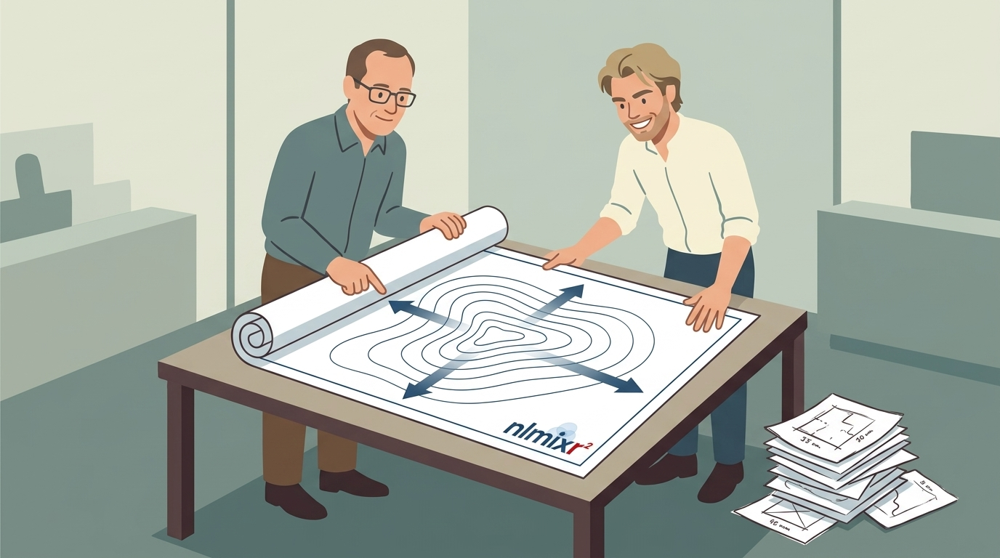
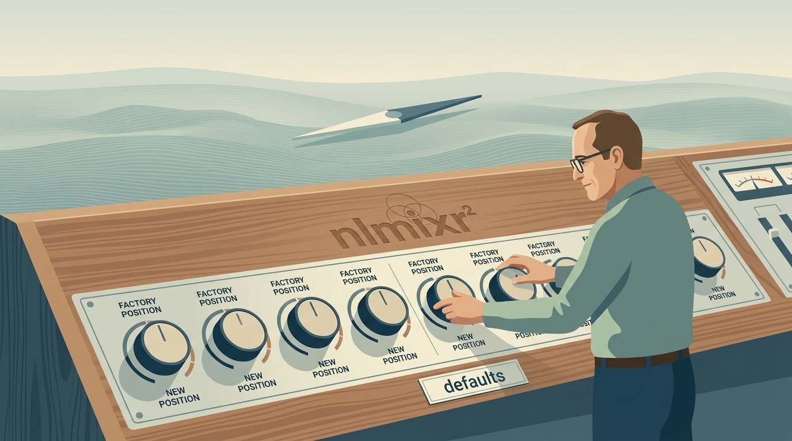
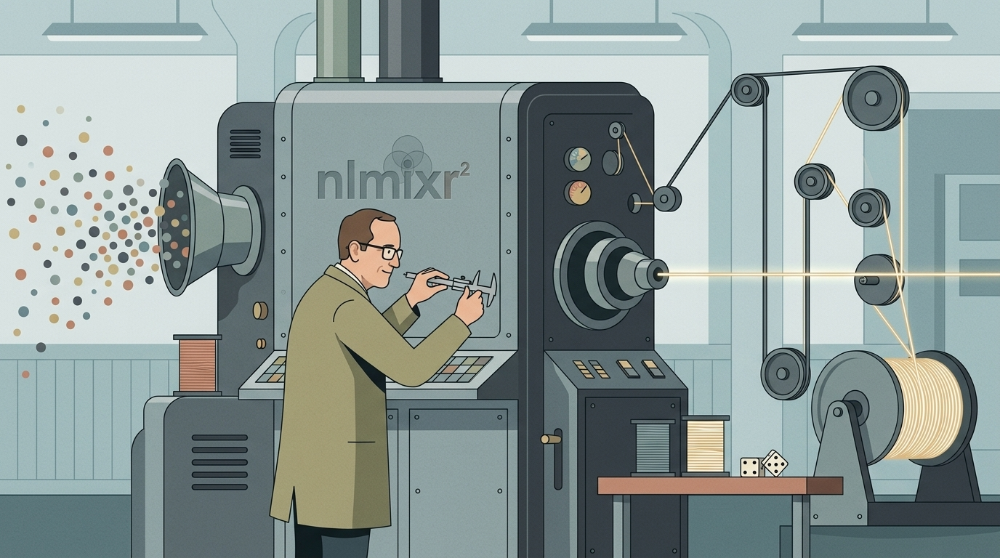
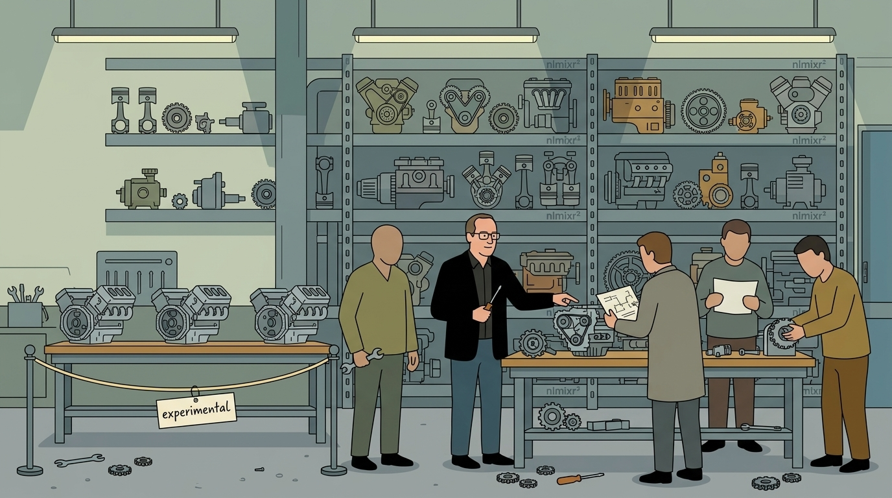

nlmixr2 7.0: focei solves in parallel
This release, in five pictures

focei solves in parallel

foceif gets an exact population gradient

focei defaults moved

saem is more robust

1. Solving in parallel